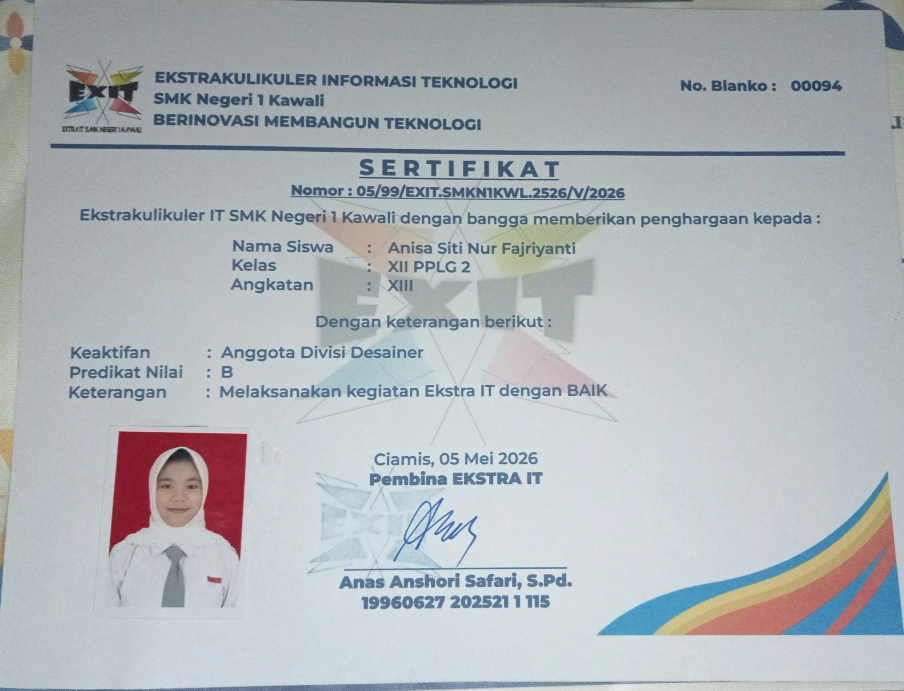
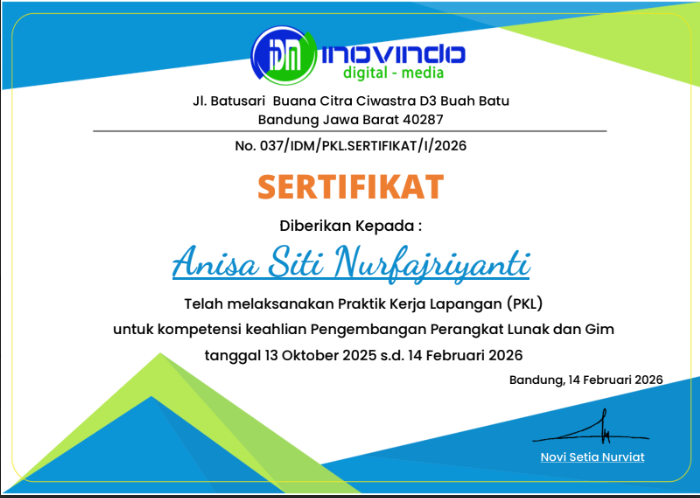
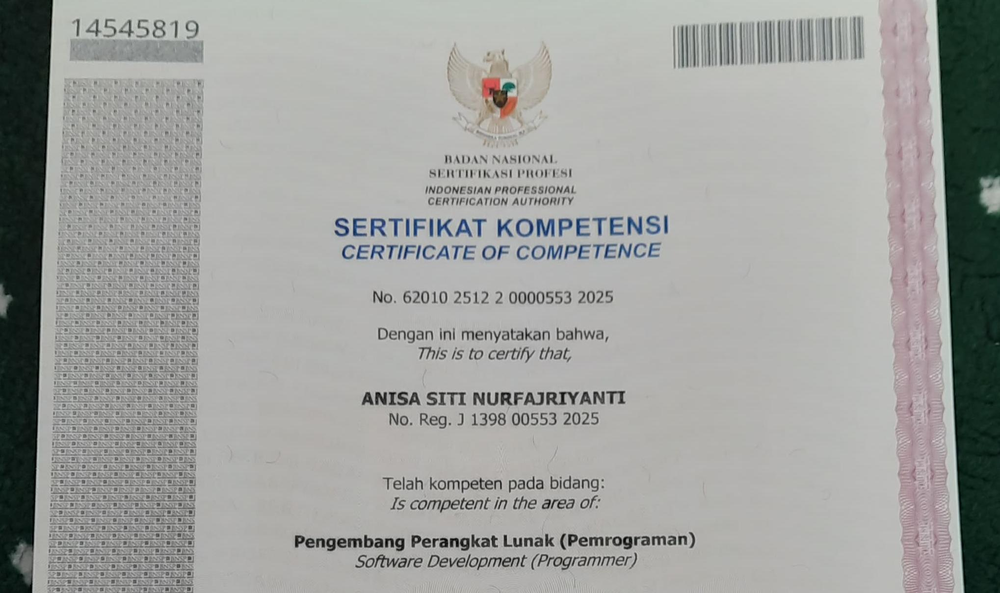
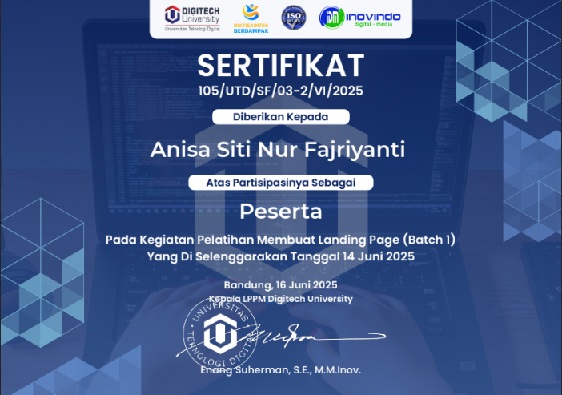

Sertifikat
Bukti kompetensi dan penghargaan.

Sertifikat Keaktifan Ekstrakurikuler IT
2026Ekstrakurikuler IT

Sertifikat Praktik Kerja Lapangan
2026PT. Inovindo Digital Media

Sertifikat Uji Kompetensi Keahlian
2025Badan Nasional Sertifikasi Profesi

Sertifikat Pembuatan Landing Page
2025Digitech University

Sertifikat Webinar Cyber Security
2024PANDI